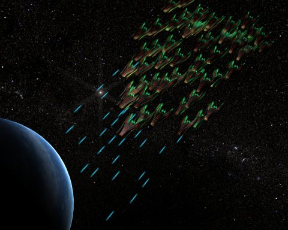

| Les événements qui sont décrits ci-dessous se sont déroulés lors de la première bêta d'Apolcaypsis. Consultez à cet égard le wiki de la bêta |
Sommaire
- 1 Notes de l'Historien
- 2 01 ETU : Le début de l'Histoire
- 3 100 ETU : Bipolarisation
- 4 142 ETU : Premières escarmouches
- 5 172 ETU : Course aux armements
- 6 199 ETU : Guerre
- 7 200 E.T.U. Fregger, FlyingBull, Greg : les apocalypses à répétition
- 8 250 E.T.U. Ouragan magnétique
- 9 300 E.T.U. Guerre autour de la contrebande...
Notes de l'Historien
1. Comme nous l'avons vu, notre connaissance de la Préhistoire est coupée nette autour des années 2600 UTP. Il s'est révélé impossible de déterminer une durée même approximative de cette période de trou noir historique que les chercheurs ont pris l'habitude de nommer Interhistoire. La colonisation se serait faite dans l'urgence et sans aucune concertation, et il semblerait que chaque système se soit coupé des autres pendant une période indéterminée.
2. La période que nous nommerons par commodité « Histoire » commence aux alentours de l'an 01 ETU. L'Echelle de temps universelle, adoptée par l'ensemble du monde connu, marque en effet la reprise des échanges entre les différents secteurs de la galaxie, fait avéré puisqu'une échelle temporelle universelle s'est avérée nécessaire. Et par là même, la réunification progressive de l'Humanité dans la galaxie 0 qui s'était éparpillée dans des directions différentes.
3. Nos connaissances sur la période qui sera développée ici et dure jusqu'à aujourd'hui, sont beaucoup moins lacunaires que celles concernant la Préhistoire. Nous espérons que le lecteur y trouvera l'ensemble des informations qu'il pourrait rechercher, notamment en ce qui concerne le conflit entre l'Alliance et la Fédération qui déchirait hier encore l'humanité, et qui est probablement responsable de la situation actuelle...
4. Seule l'Histoire de la Galaxie 0, berceau de l'humanité, est bien connue, notamment grâce aux efforts de la Guilde commissionnaire pour tenir des registres historiques à jour. Il semblerait que les autres galaxies de l'Univers soient marqué par la domination de l'Organisation Renégate, et par le faible nombre d'échanges planétaires... Il apparaît cependant aussi que suite à l'Expérience intergalaxia, de nombreux commandants échoués dans d'autres galaxies soient entrés en communication galactique.
01 ETU : Le début de l'Histoire
En l'an 01 ETU, l'humanité était éparpillée dans de nombreuses directions et sur de nombreuses planètes. On estime le nombre de planètes colonisées au moins partiellement à 500 pour cette époque. Mais nul ne sait combien de temps avait pris ce processus, et les groupes humains avaient connu une autarcie considérable. La décision pour chaque système planétaire d'abandonner les unités de temps régionales fut prise en même temps que celle de centraliser les informations scientifiques détenues aux quatre coins de la galaxie, suite au développement embryonnaire d'un commerce entre les différents systèmes qui étaient restés isolés les uns des autres depuis une période qui apparaît comme relativement longue. C'est le tout premier Grand Congrès de Leem qui fut désigné comme origine à notre actuelle ETU (échelle de temps universelle).
D'après nos informations, le syndicat des commerçants indépendants (SCI) avait été le principal acteur de cette première étape. (cf. article « La Guilde, Historie et caractéristiques »). Il faut dire que le Syndicat était la seule entité qui avait eu l'occasion de maîtriser parfaitement les différents dialectes du monde connu, et avait les moyens commerciaux de présider au rassemblement de l'ensemble des représentants des colonies, qui se regroupèrent sur la planète Leem.
En l'an 01, le SCI était incontestablement l'organisation humaine la plus puissante et la plus ouverte sur le monde, alors que paradoxalement les critères d'appartenance au syndicat restaient obscurs et très fermés. Nul ne sait combien de vaisseaux lui appartenaient. En outre, il est difficile d'imaginer sa puissance réelle, puisqu'elle ne possédait qu'une unique planète inoccupée rachetée par le syndicat quelques années auparavant à une colonie qui y exploitait de l'uranium.
Il existait parmi les colonies représentées au Grand Congrès deux grandes cultures politiques. Les unes étaient gouvernées d'une main de fer par des élites garantes de l'intérêt général, élues ou désignés de façon héréditaires (appelées depuis « colonies-dirigistes »). Les autres possédaient des niveaux de gouvernement très complexes et nombreux, si bien que nul n'aurait été capable de dire qui y accaparait le pouvoir (appelées « colonies-gouvernance »). Alors que s'installait la tradition de la tenue d'une Assemblée du Grand Congrès tous les ans, les colonies qui étaient restées isolées durablement, prirent conscience de l'existence de ces deux grandes cultures. Dans l'assemblée circulaire de Leem, ces deux grandes « familles » prirent en quelques années l'habitude d'occuper chacune un hémicycle.
Alors que le syndicat parrainait la mise en commun des technologies et des avancées scientifiques, comptant sur le développement de débouchés commerciaux, les liens se renforçaient à l'intérieur de chacune des deux familles politiques, qui commençaient à s'opposer sur certains débats à l'Assemblée.
100 ETU : Bipolarisation
En 100 ETU, ces rapprochements se concrétisèrent : les colonies-dirigistes signèrent un traité consacrant une union dirigiste, posant comme objectif « une union sans cesse plus importante entre les colonies de l'Union ». 100 ans plus tard, cet objectif semblait atteint, puisque la Fédération Dirigiste fut inaugurée sur Keeh, qui devenait la capitale de la Fédération.
En réponse, les colonies-gouvernance signèrent un pacte, qui allait aboutir non sans idéalisme à la constitution de l'Alliance Eternelle sacralisée sur Newdeun.
Pendant le demi-siècle qui suivit, les relations à l'intérieur de la Fédération dirigiste d'une part et de l'Alliance Eternelle d'autre part se renforcèrent considérablement, alors que les relations entre les deux groupements coloniaux perdaient progressivement tout intérêt. En conséquence, le Syndicat avait perdu le monopole du commerce, et ses ressources se limitaient maintenant aux échanges entre les deux communautés, que seul il savait prendre en charge et rentabiliser.
Les fonds d'investissement scientifiques globaux avaient explosé, l'Alliance et la Fédération gérant leurs affaires scientifiques, commerciales... séparément. Les avancées scientifiques durant cette période furent conséquentes, alors qu'elles avaient stagné durant la période isolationniste.
142 ETU : Premières escarmouches
C'est au cours de l'année 142 ETU qu'apparurent les premières véritables tensions diplomatiques entre la Fédération et l'Alliance. Les deux entités politiques revendiquaient en effet un certain nombre de colonies intermédiaires et de prolixes gisements lunaires qui occupaient une position géostratégique entre les deux organisations. Malgré les tentatives de conciliation intéressées du Syndicat des Commerçants Indépendants, un embargo réciproque fut engagé entre les deux puissances, qui cessèrent toute communication. Les deux organisations cessèrent aussi de siéger sur LEEM au sein du Grand Congrès, préférant siéger l'une sur KEEH, et l'autre sur NEWDEUN. Les programmes de Défense et de Sécurité, qui avaient été interrompus depuis fort longtemps, furent repris et devinrent prioritaires sur les programmes de recherche fondamentale.
Ainsi, la première conséquence de ces tentions fut paradoxale : le Syndicat et ses commerçants se retrouva sans ressources, et il eut donc à résoudre la crise par de profonds changements organisationnels et institutionnels. C'est ainsi que le syndicat se reforma au sein d'une « Guilde commissionnaire ». Les marchands de la Guilde réinvestirent les marchés internes de la Fédération et de l'Alliance, et s'impliquèrent dans des manoeuvres spéculatrices, exploitant les déséquilibres ayant fait suite à la sécession complète des échanges entre l'Alliance et la Fédération.
Au-delà de l'organisation même de la Guilde, c'est toute sa philosophie qui fut modifiée. La Guilde qui avait jusqu'alors réussi à concilier ses intérêts avec l'essor de l'humanité (ex : elle avait été à l'origine du Premier Grand Congrès), cessa de croire en de grands principes, pour se consacrer à son seul intérêt matériel, étant prête à tout pour réaliser du profit, fut-ce au prix de la perte de vies humaines. Ainsi, elle réussit par un coup spéculatif particulièrement bien pensé à provoquer une hausse du prix des biens alimentaires qui entraîna la mort de milliers de colons sur une planète de la Fédération. Bien entendu, la Guilde avait mis en place dans le plus grand secret ses propres programmes de recherche scientifique.
Suite à ce choix de la majorité des commerçants du syndicat, un courant minoritaire de l'Organisation décida de s'exiler en secret vers les systèmes lointains de la galaxie. Ces commandants refusant l'évolution du syndicat en Guilde fondèrent l'Organisation Renégate, dont l'Histoire est aujourd'hui encore très mystérieuse, dirigée par Drakaan dans la galaxie 0, mais présente économiquement dans l'ensemble des galaxies.
172 ETU : Course aux armements
Cette période de tension se poursuivit, et vit le réarmement massif de la Fédération. Tout permettait de croire que la guerre était imminente. De son côté, l'Alliance avait développé ses programmes d'armement mécanoïdes afin d'éviter la perspective de pertes humaines dans le conflit qui s'annonçait inévitable, les deux camps étant persuadés de leur intérêt et de leurs chances à l'emporter.
La Guilde, quant à elle, avait tout à fait compris l'intérêt qu'elle avait à spéculer sur le prix des armes, et s'était rendue nécessaire à l'Alliance comme à la Fédération, qui n'envisageaient pas la moindre action agressive envers elle.
C'est à ce moment là qu'un second courant minoritaire de la Guilde prit son indépendance, refusant la spéculation sur le prix des armes. Les commerçants en question fondèrent l'ordre des Héritiers de l'Histoire, qui décidèrent de partir en quête du peuple renégat, sans succès jusqu'aux années 270 ETU. Les Héritiers de l'Histoire, camouflés en contrebandiers, veillèrent sur le système économique de la Galaxie 0 jusqu'à l'Assassinat de son chef, Yik, par Drakaan, récemment.
En effet, c'est à cette époque, durant cette course aux armements, que Drakaan avait tenté un coup d'Etat contre le dirigeant de la Fédération, Attilane, coup d'Etat empêché par Yik et le peuple des Héritiers.
199 ETU : Guerre

La Guerre éclata dans la galaxie 0 en 199 E.T.U., lorsque les escadres de croiseurs fédérés attaquèrent le poste avancé Nool de l'Alliance à la frontière spatiale commune. Pendant plusieurs journées, les croiseurs et kamikazes fédérés affrontèrent les escadres mécanoïdes pilotées virtuellement par les pilotes d'Elite de l'Alliance.
La bataille qui s'était étendue à l'ensemble des territoires fédérés ne vit ni vainqueur ni perdant, ni traité. Durant plusieurs années, les armées s'affrontèrent sans qu'aucune ne soit capable de l'emporter sur l'autre.
Hier, en 204 ETU, tout portait à croire que les deux camps préparaient un affrontement final qui devrait forcément laisser un vainqueur se démarquer. Mais quelques jours après, le silence radio complet régnait dans la galaxie.
La planète Keeh et ses antennes radiospatiales avaient été détruites par des atomiques puissants, suite à une manoeuvre spéculative ratée du commerçant d'élite Ghuo. En représaille, Attilane, mit Leem à feu et à sang, alors que les tentatives de pacification de Calomu, Représentissime de l'Alliance, s'étaient soldées par la destruction de Newdeun, capitale de l'Alliance.
Pour de nombreux commandants présents dans la galaxie, de toutes les factions, ces révélations furent l'espoir d'un nouveau départ. Mais la réparation des antennes radiospatiales sur Leem, Keeh, et Newdeun, permit aux dirigeants des trois factions de convoquer les commandants qui leur étaient affiliés, leur demandant un impôt et un soutien militaire.
La sédition fut portée par des légendes galactiques d'aujourd'hui qui n'étaient à l'époque que de jeunes commandants, tels Fregger et Arkk, qui partirent en guerre contre les tyrans, et pratiquée par de nombreux commandants. L'opération fut un succès à tel point que Fregger s'imposa comme le nouveau général de la Fédération, alors qu'Arkk recréait l'Alliance Eternelle. Ghuo fut coulé dans du métal en fusion par Fregger, Attilane se suicida dans sa geôle, alors que Calomu prit conscience de son échec au dernier instant et périt sur le front contre Attilane.
200 E.T.U. Fregger, FlyingBull, Greg : les apocalypses à répétition


Mais encore une fois la paix fut de courte durée. Le pouvoir eut une emprise incroyable sur Fregger, qui développa l'un des plus grands empires de la galaxie 0. Seul un jeune commerçant planifiait de se dresser contre lui en secret, et le talonnait dans la taille de ses moyens. Mais le brave Mac Polar n'eut pas le temps de mener à bien sa mission. Il choisit la voie de la retraite, se contentant d'organiser de nombreux tournois. Fregger déclencha le second apocalypse par la destruction hyperatomique de nombreux systèmes, avant de disparaître mystérieusement, alors qu'Arkk trahissait l'Alliance à contrecoeur, pour fonder l'Alliance Sombre.
C'est à cette époque qu'une anomalie magnétique partit de Keeh, se dirigeant vers les systèmes lointains. Etrangement, ce fut aussi à cette époque que Yik le contrebandier fit sa toute première apparition à la taverne.
Quoiqu'il en soit, la période qui suivit fut marquée par de nombreuses apocalypses d'une violence inouïe. Les légendes FlyingBull et Fedayn réussirent des coups de maître, alors que le bien connu Greg, aidé d'un certain Obiwan, parvenait à détourner l'impôt galactique qu'il avait mis en place, et déclenchait lui aussi un apocalypse sanglant. Les premiers ultrémistes firent aussi leur apparition. On peut aussi souligner le rôle de Forest et d'Archimage dans les tentatives post-Arkiennes de redonner vie à l'Alliance.
Ce furent 50 ans de guerre qui marquèrent la galaxie tout juste sortie des trois entités politiques qui la composaient auparavant...
250 E.T.U. Ouragan magnétique
En 250 E.T.U., un grand ouragan magnétique balaya l'intégralité des systèmes connus. Certains commandants survécurent, se retrouvant à l'autre bout de la galaxie 0. De nombreux commandants furent portés disparus, d'autres à l'image de Nanovitch se réincarnèrent dans des Gholas. D'autres encore changèrent d'identité, alors que des commandants qui avaient disparus du temps de Fregger, telle l'Union Communiste de Redsamouraï, choisissaient de revenir. Enfin, de nombreux commandants jusqu'ici ignorés étaient apparus. Les empires se constituèrent, de grandes coalitions officielles émergèrent, telle la Corporation Bleue, l'Alliance Eternelle aujourd'hui dissoute, le Culte des Divins. Des organisations moins officielles virent le jour, tel le Culte Bodet, ou encore l'Ultremisme.
L'Histoire de la galaxie 0 s'écrit encore aujourd'hui... Alors que les Histoires des galaxies suivantes en sont à leur prologue, puisqu'aucune donnée les concernant n'avait jusqu'à présent été accessible...
300 E.T.U. Guerre autour de la contrebande...
Une guerre autour des enjeux de la contrebande opposa l'organisation des Héritiers de l'Histoire à l'Organisation Renégate de Drakaan. L'ouragan magnétique qui s'ensuivit fut imputé à cette guerre et eut les mêmes effets que la précédente Apocalypse.